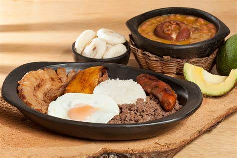

Sobre Mi
Soy una persona profundamente apasionada por el fútbol, los autos y todo aquello que implique un desafío que me permita crecer personal y profesionalmente. El fútbol me ha enseñado el valor del trabajo en equipo, la importancia de la estrategia y el compromiso constante; los autos, por otro lado, despiertan en mí una mezcla de admiración por la ingeniería, la velocidad y la evolución tecnológica, además de representar una forma de libertad y superación.
Lo que realmente me motiva es emprender en cosas nuevas, no solo por el conocimiento que se gana en el camino, sino por la experiencia misma de enfrentar lo desconocido. Disfruto de los retos personales porque son los que me impulsan a salir de mi zona de confort y me permiten descubrir de lo que realmente soy capaz.
Para mí, la disciplina es uno de los pilares más sólidos de mi vida. Estoy convencido de que el talento por sí solo no basta; sin esfuerzo, constancia y dedicación, los sueños se quedan en ideas. Por eso, cada día trabajo en ser mejor, en pulir mis habilidades y en construir un camino firme hacia mis metas.
Siempre estoy en la búsqueda de nuevas oportunidades para aprender, crecer y demostrarme a mí mismo que, con determinación, enfoque y pasión, no hay límites que no puedan romperse. Creo firmemente que cada paso, por pequeño que sea, suma en el camino hacia la grandeza personal.
Pelicula favorita
La vida es bella (La vita è bella, 1997)
La historia sigue a Guido, un hombre alegre y optimista que conquista a Dora, una maestra con la que se casa y tiene un hijo llamado Giosuè. Su vida da un giro cuando, durante la ocupación nazi, son deportados a un campo de concentración por ser judíos.
Para proteger a su hijo del horror de la guerra, Guido le hace creer que todo es un juego, donde deben seguir ciertas reglas para ganar un tanque como premio. A pesar de las condiciones terribles, Guido mantiene el ánimo y la imaginación viva para evitar que su hijo pierda la esperanza.
La película muestra la fuerza del amor, la imaginación y el sacrificio. A pesar de su trágico final, deja un mensaje poderoso sobre la belleza de la vida incluso en medio del sufrimiento.
Cancion Favorita
Porqué la envidia (Yeison Jiménez)
es una canción del cantante colombiano Yeison Jiménez, lanzada en 2015. En ella, el artista reflexiona sobre las críticas y comentarios negativos que ha recibido debido a su éxito. Jiménez expresa que, aunque pueda cometer errores, no merece ser juzgado de manera despiadada. Destaca las dificultades y sacrificios que ha enfrentado para alcanzar sus logros, incluyendo noches enteras rezando y pidiendo ayuda a Dios. La canción también aborda cómo la envidia puede humillar y molestar a quienes la sienten, especialmente cuando ven triunfar a una persona humilde.
Comida favorita
Bandeja paisa
Me encanta prepararla de la siguiente forma:
Utencilios:
- Olla a presión
- Sartén
- Cuchara
- Licuadora
Ingredientes
- 1 1/2 cucharadas de aceite (21 g)
- 2 tallos de cebolla larga finamente picada (30 g)
- 2 tomates maduros sin piel y finamente picados (240 g)
- 1 sobre de CALDO CON COSTILLA MAGGI® DESMENUZADO (9 g)
- 3 tazas de agua (750 ml)
- 1/2 libra de fríjoles bola roja remojados desde la noche anterior (250 g)
- 1 zanahoria mediana, entera y pelada (140 g)
- 1/4 libra de carne molida magra (125 g)
- 1/2 libra de arroz blanco cocinado (250 g)
- 1/4 de libra de tocino crocante cortado en 4 porciones (125 g)
- 4 chorizos tipo coctel previamente cocinados y dorados (120 g)
- 4 huevos fritos (200 g)
- 1 aguacate partido en 4 porciones (110 g)
- 4 arepas pequeñas redondas (80 g)
- 4 tajadas de plátano maduro fritas (80 g)
Preparacion
- Calienta en una olla a presión una cucharada de aceite por 3 minutos a fuego medio; añade la cebolla, el tomate y el sobre de CALDO CON COSTILLA MAGGI® DESMENUZADO y revuelve para integrar bien, finalmente cocina por 2 minutos o hasta que el tomate suelte sus jugos.
- Adiciona las tres tazas de agua, los fríjoles y la zanahoria entera. Tapa la olla y cocina por 30 minutos.
- Pasado el tiempo de cocción retira la olla del fuego, sácale el aire con cuidado antes de destapar.
- Saca la zanahoria y licúa con el caldo de los fríjoles.
- Agrega el licuado a la olla nuevamente para espesar, lleva a fuego bajo y revuelve de vez en cuando.
- Calienta en una sartén el aceite restante por 3 minutos a fuego medio. Agrega la carne y con una cuchara revuelve, debes dejar cocinar por 10 minutos o hasta que este bien cocinada.
- En una olla de fondo alto agrega 2 tazas de agua y el tocino cortado en trozos; tapa la olla y lleva al fuego medio por 20 minutos o hasta que el tocino esté bien cocinado y crocante. Retira del fuego y déjalos en papel absorbente para retirar el exceso de grasa.
- En una sartén pequeña adicionar dos cucharadas de agua y los chorizos. Lleva a fuego medio hasta que los chorizos estén bien dorados.
- En una parrilla o sartén a fuego medio debes poner las arepas y dorar por ambos lados.
- En 4 bandejas o 4 platos sirve arroz, fríjoles, carne molida, chicharrón, chorizo, huevo, aguacate, arepa y 1 tajada de plátano maduro, todo en porciones iguales.